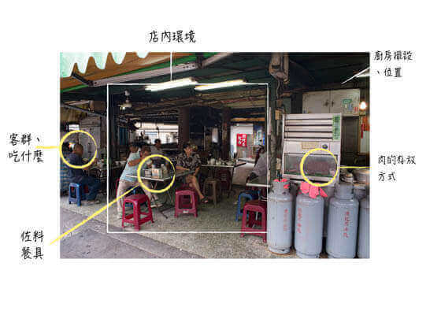
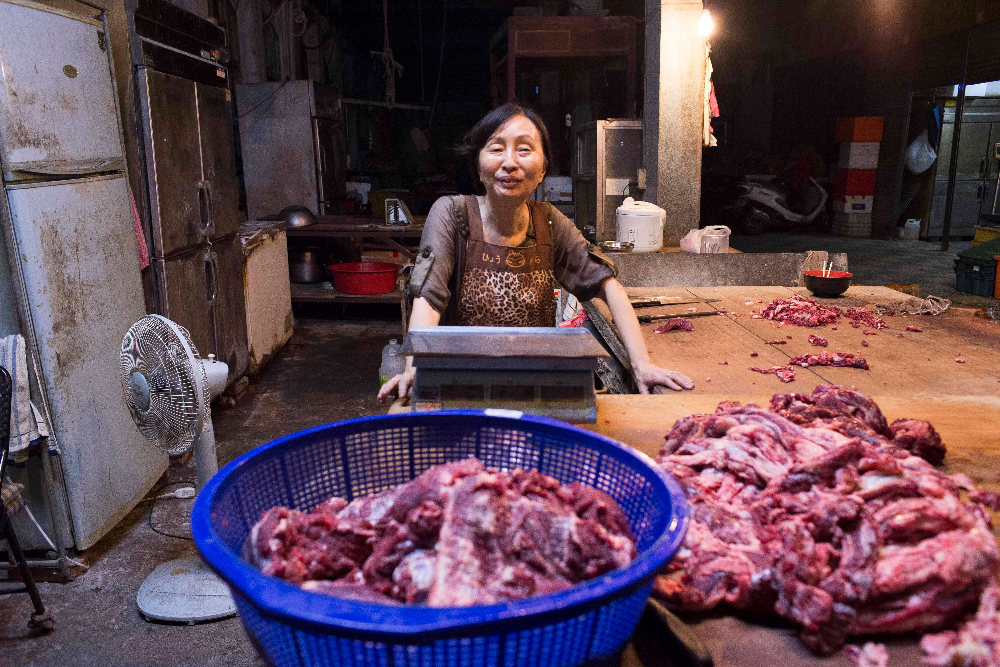

-

- 
- 
｜寫在觀察前
「為什麼台南人這麼愛喝牛肉湯？」
「如果要推薦台南美食給朋友…」「啊！牛肉湯」
近年來「牛肉湯」已經成為了台南美食的代表之一，「一大早就喝牛肉湯」的行為，也像是都市傳說般地引起外地人好奇。
但為什麼牛肉湯唯獨盛行於台南？為什麼牛肉湯會是台南人的早餐？
決定邊喝牛肉湯邊進行路上觀察，來探究「台南人愛喝牛肉湯的秘密」！
｜觀察安排
由於牛肉湯在觀光的操作下，已變成某種「台南風味」的符號，但很少從「牛肉湯」外延伸出其他討論。故本次試圖離開觀光宣傳下的表面印象，回到一道「料理」去看待它，並探究其背後的飲食網絡。
本次觀察與「我要征服台南牛肉湯!!!」網站創辦人張小均合作，在觀察路線、店家挑選、觀察面向上皆有安排。時間選定從早上時段的牛肉買賣開始（凌晨五點，大菜市），拜訪老字號三代傳承的牛肉攤，再開始延伸至12間在湯頭、料理上皆有所擅的店家，觀察團兵分三路食用超過24道牛肉湯與料理。主問題意識定為「台南人為何愛吃牛肉湯？」，並包含了人、物、境的觀察面向，如：料理內容（牛肉湯與其他搭配料理）、店內環境、顧客與頭家等。
｜觀察報告
「台南人為什麼愛喝牛肉湯？」或著——我們為什麼愛喝牛肉湯呢？
要把庶民飲食研究一番，討論無可避免地還是會回到個人對於牛肉湯的感受。回顧凌晨五點至十一點的24碗牛肉湯，令團員們回味無窮的，除了食物本身，還是在於人情與店內環境的觀察。
一碗牛肉湯，光是湯頭就有中藥、蔬果、牛內臟等變化，若問起老闆，他們都可以自信地把湯底撈起介紹一番。不只是做好一碗牛肉湯，店內的牛肉料理，如：”金牛肉湯”的牛頰、”康樂街牛肉湯”的辣炒牛肉與麻油牛肝、”美牛肉湯”的牛肉蛋炒飯，店家對於「牛肉」的了解，延伸了舌尖對於牛肉的想像。
然而在牛肉湯的美食光環下，仍有閒話家常的問候：有老闆因為看著熟客每天光顧，而放棄加味精，擔心餵毒給已是朋友的人客；有的店家因為擔心某位常客感染了登革熱，特地騎車到家裡關心；一碗牛肉湯也附帶著叮嚀、問候「你每天都吃肉，要多吃一些蔬菜啦～」、「手機又忘記帶走，這樣會....#$%&」。康樂街牛肉湯的老闆娘，還會教客人如何分辨味精湯頭，希望客人能夠喝出忠實的味道。
除了自身對於牛肉湯的感受，觀察店內客人與環境，可以發現光顧的還是在地人居多，許多人都是熟門熟路，不用看菜單就點好了早餐，許多牛肉湯店甚至設有「常客專用席」，通常在接近廚房的地方，客人會邊吃邊與老闆大聊。這些都是牛肉湯在台南享有一席之地的線索。另外本次觀察因時間較早，通常店家沒有足夠的時間閒聊，不然很想知道只有這些屬於每間不同的料理，是怎麼開始的，是否跟各地的喜好有關？
早期做工的人需要肉食補充體力，而奠下了牛肉湯的基礎。也許在今天，多元的牛肉料理、不變的人情交流，才讓「牛肉湯」成為了今日庶民飲食的日常。